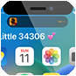

mineland
Enable and customize Dynamic Island on notched devices.
This is an unofficial fork of 34306/mineland. The original positioning code is credited to 34306 and KhanhDuyTran.
Added in this fork
- An off-by-default Dynamic Island activation switch.
- A rootless daemon that safely updates and restores the MobileGestalt capability.
- Automatic respring after a successful toggle change.
Compatibility
For rootless jailbreaks on iOS 16 or later. The activation method is probably the one changed on iOS 18 and later. A userspace reboot may be required.